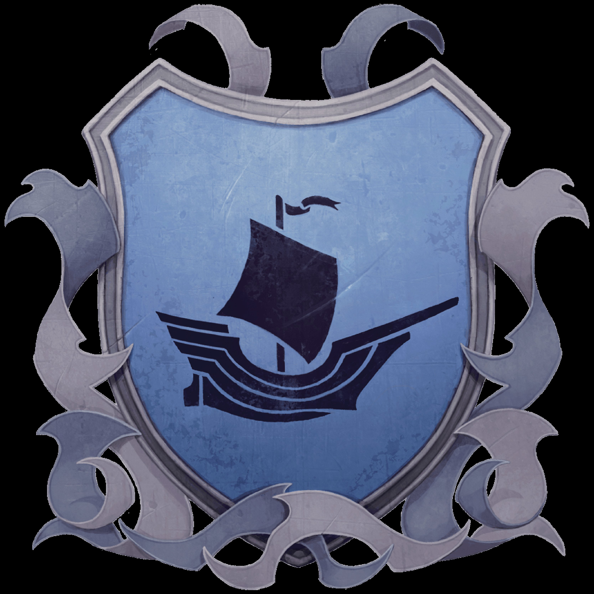

Quick Facts about the Ten Towns
| Town Name |
Population |
Speaker |
Crest |
Sacrifice |
Rivals |
| Bremen |
150 |
Dorbulgruf Shalescar |
|
Warmth |
Lonelywood, Targos, Termalaine |
| Bryn Shander |
1,200 |
Duvessa Shane |
 |
Humanoid |
None |
| Caer-Dineval |
100 |
Crannoc Siever |
|
Food |
Caer-Konig, Easthaven |
| Caer-Konig |
150 |
Trovus |
|
Food |
Caer-Dineval, Easthaven |
| Dougans's Hole |
50 |
Edgra Durmoot |
|
Warmth |
Good Mead |
| Easthaven |
750 |
Danneth Waylen |
|
Humanoid |
Caer-Dineval, Caer-Konig |
| Good Mead |
100 |
None |
 |
Warmth |
Caer-Dineval, Caer-Konig |
| Lonelywood |
100 |
Nimsy Huddle |
|
Food |
Bremen, Targos, Termalaine |
| Targos |
1,000 |
Naerth Maxildanarr |
 |
Humanoid |
Bremen, Lonelywood, Termalaine |
| Termalaine |
600 |
Oarus Masthew |
 |
Warmth |
Bremen, Lonelywood, Targos |